Obecnie dla SARS-COV-2 nie ma zdefiniowanych Variants of High Consequence
Obecnie dla SARS-COV-2 zdefiniowano następujące VoC: B.1.1.7 (brytyjski), P.1 (brazylijski), B.1.351 (południowo afrykański), B.1.427 (kalifornijski), B.1.429, B.1.617 (indyjski), B.1.617.2, B.1.617.3.
Obecnie dla SARS-COV-2 zdefiniowano następujące VoI: B.1.526, B.1.526.1, B.1.525, P.2. 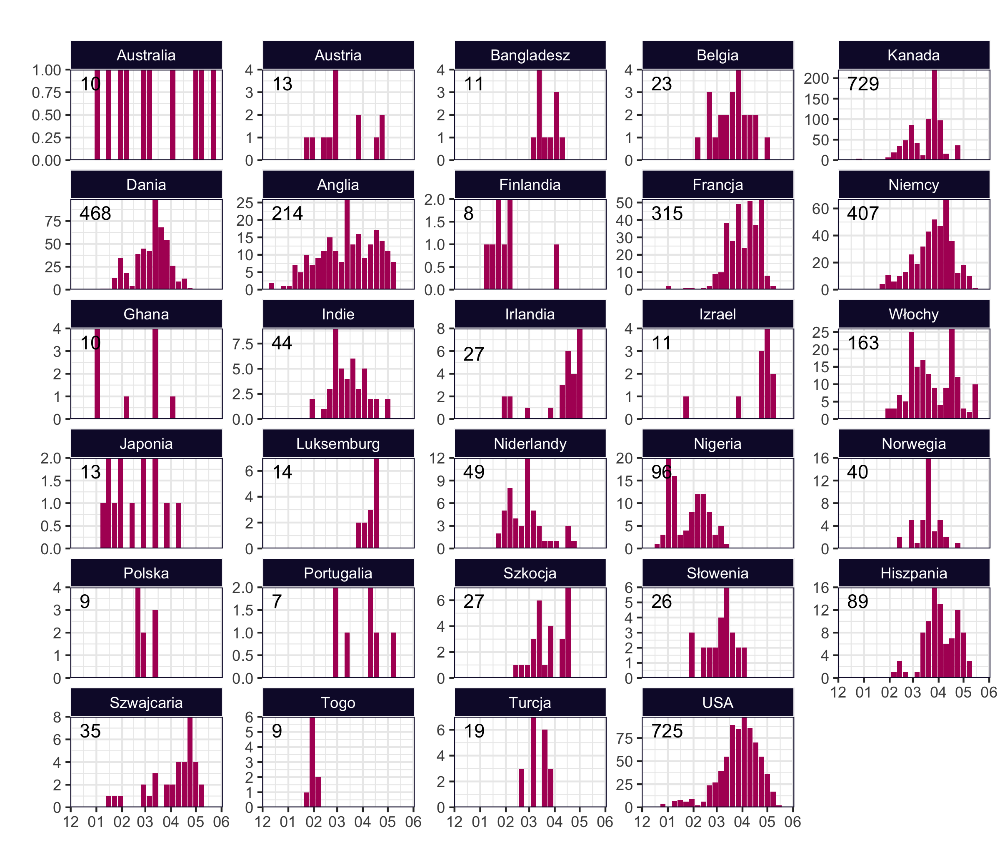
MI2DataLab, Wydział Matematyki i Nauk Informacyjnych, Politechnika Warszawska Akademicki Ośrodek Diagnostyki Patomorfologicznej i Genetyczno-Molekularnej sp. z o.o. Uniwersytet Medyczny w Białymstoku

 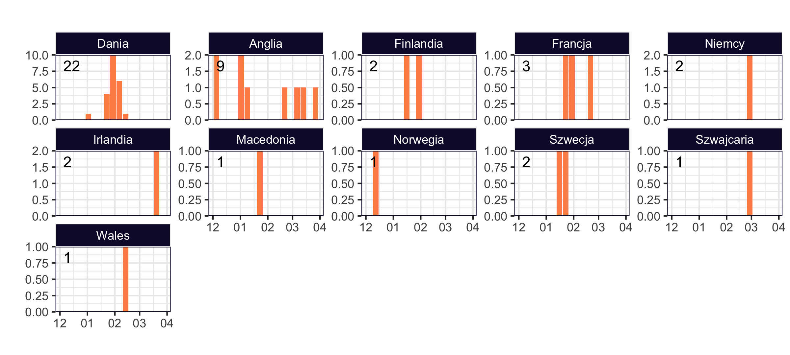
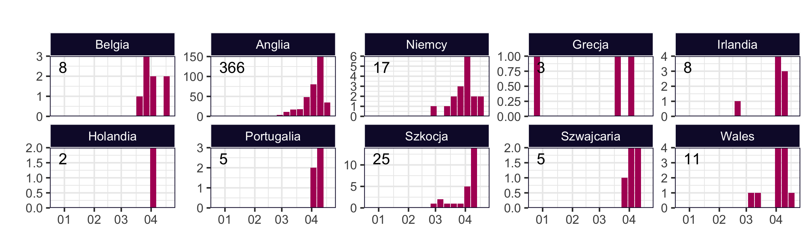
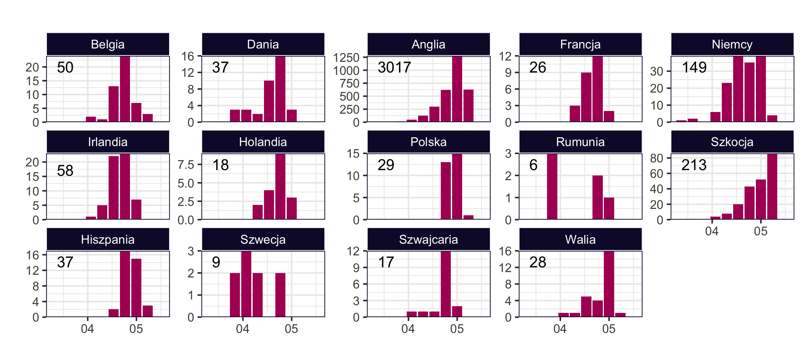
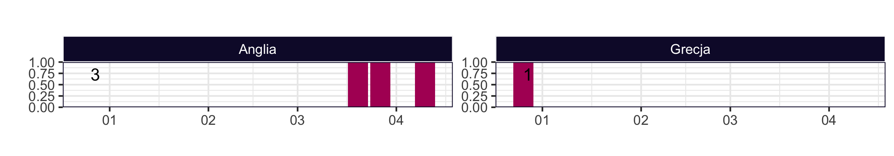
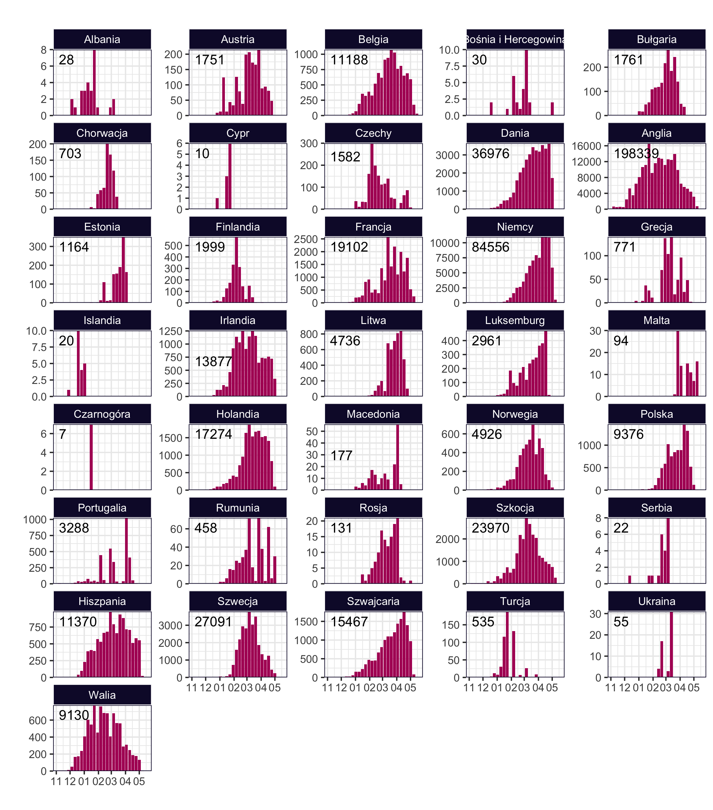
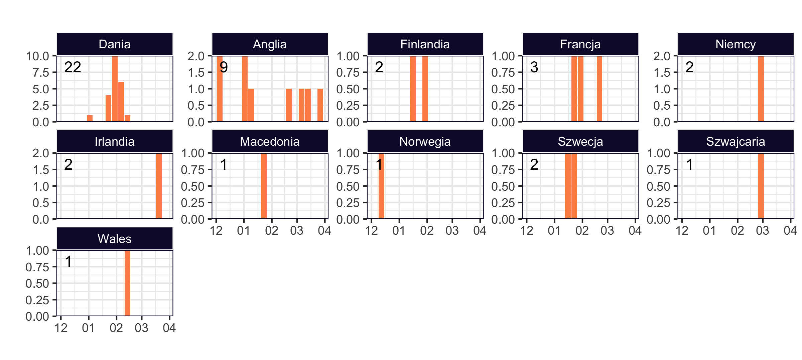
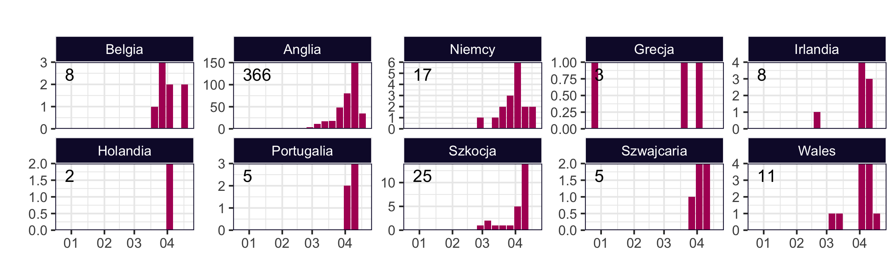
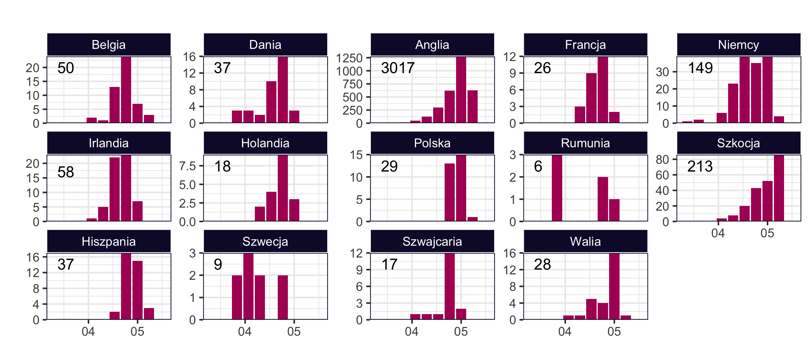
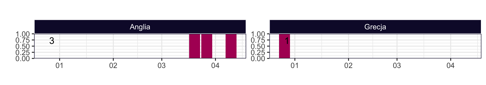
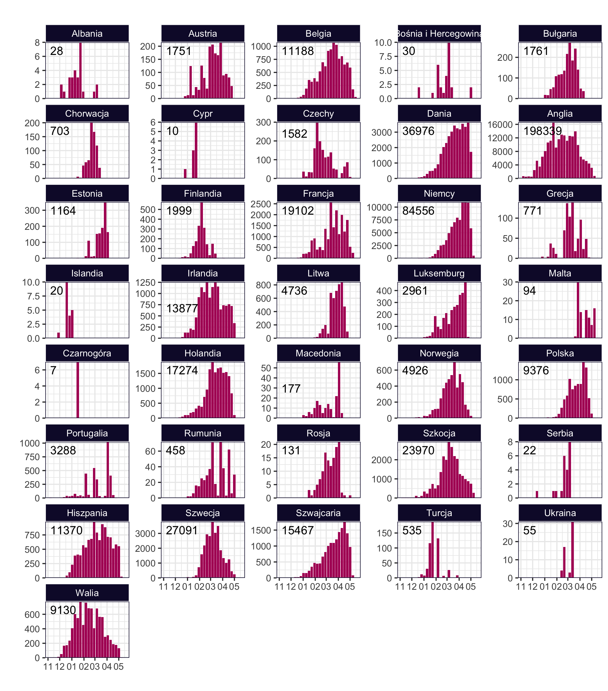

 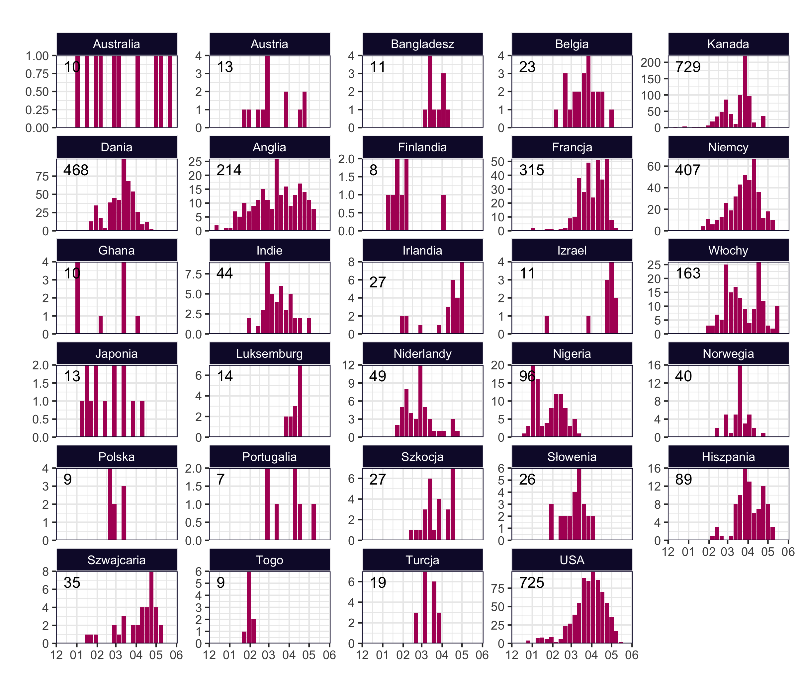
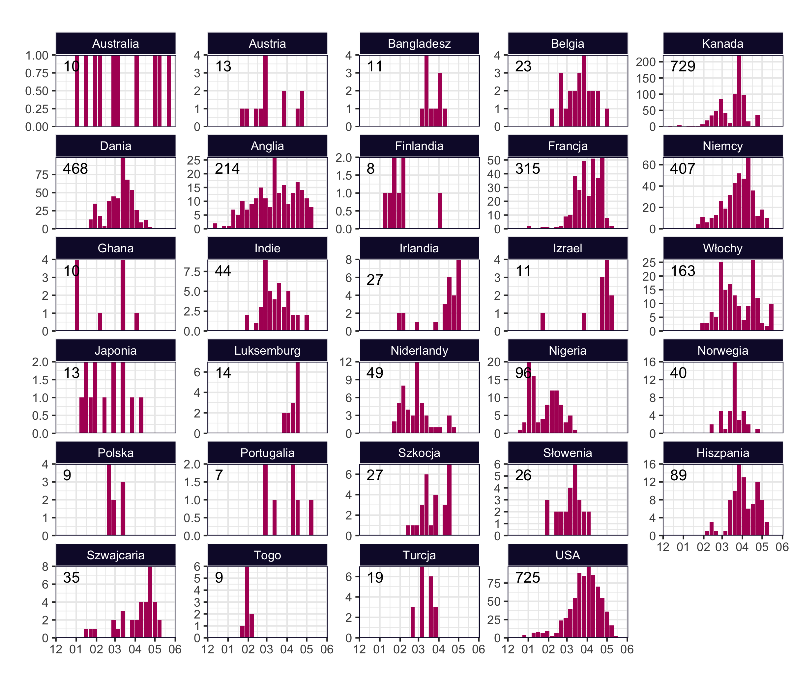